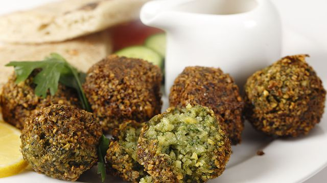

Ta'ameya

Ingredients
- 2 cups dried split fava beans
- 1 red onion, quartered
- ½ cup fresh parsley
- ½ cup fresh cilantro
- ½ cup fresh dill
- 3 cloves garlic
- 1 ½ teaspoons ground coriander
- 1 ½ teaspoons salt
- 1 teaspoon ground cumin
- 1 cup sesame seeds (Optional)
- 1 quart vegetable oil for frying, or as needed
Method
- Place fava beans into large bowl and cover with several inches of water.
Let soak, 8 hours to overnight. Drain.
- Combine soaked fava beans, red onion, parsley, cilantro, dill, garlic, coriander, salt,
and cumin in a food processor; process to a dough-like consistency.
- Heat a skillet over medium heat. Add sesame seeds; cook, stirring occasionally,
until toasted, about 5 minutes. Transfer to a large plate.
- Shape fava bean mixture into about 50 balls. Roll balls in sesame seeds to coat.
- Fill a large saucepan 1/4 full with oil; heat over medium heat. Fry fava bean balls
in batches until golden brown, 3 to 5 minutes per batch. Drain on paper towels.
Tips
You can substitute 1/2 of the fava beans with chickpeas if you are used to traditional falafel.
You can access the authentic recipe website link
here.